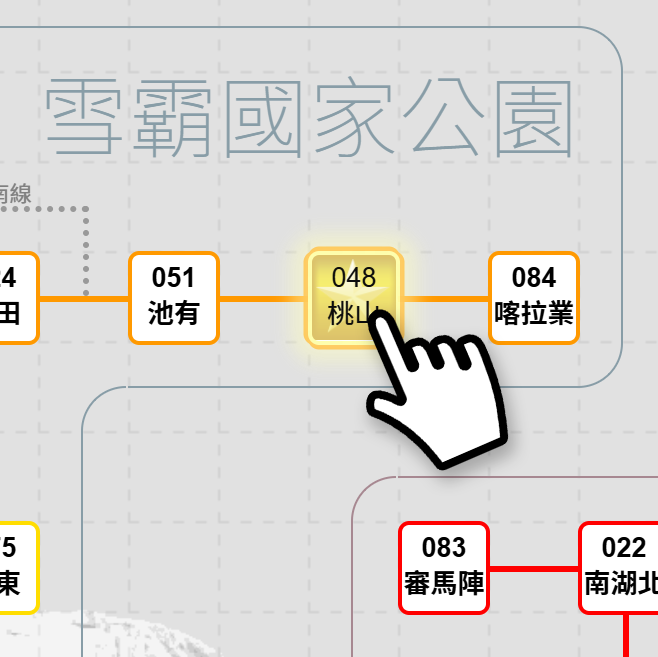
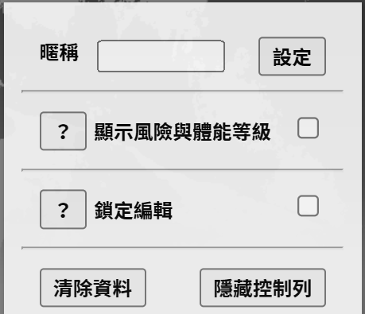
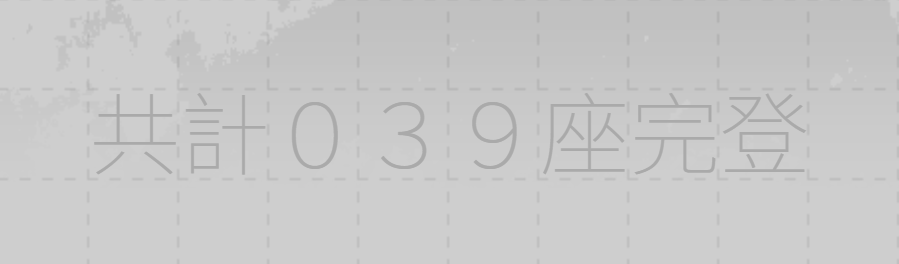
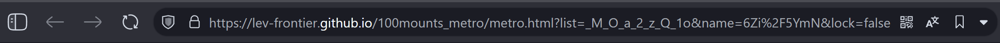
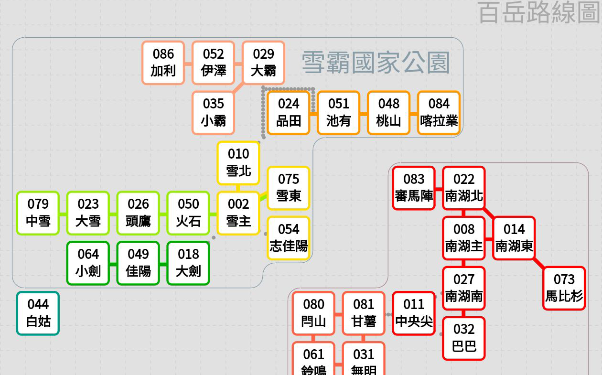
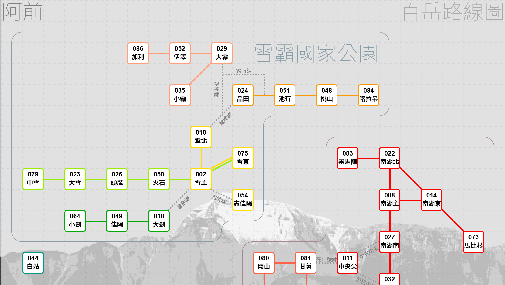

路線圖工具教學
如何編輯？
點一下格子選取/取消選取（有黃色星星底就是選取狀態）

右下角有編輯選項

- 暱稱：用來設定左上角顯示的名稱，輸入完畢後點選［設定］按鈕
- 顯示風險與體能等級：勾選會在每個山頭的方框右下顯示難易度標籤（小百岳路線圖沒有這個功能）
- 鎖定編輯：勾選的話頁面就可以鎖住操作，不給點選，避免誤點選到，適合分享出去的時候用
- 清除資料：清空整個頁面的變更，要把網頁分享給別人操作的時候可以清掉再複製出去
- 隱藏控制列：連這個編輯選項的框框也藏起來，適合分享出去的時候用
隱藏控制列之後，畫面最右下方可以看到完登數量統計

如何分享出去？
全部編輯完畢後，全選整個網址列，複製下來貼出去即可。

原理為何？
網頁內所有點選的操作與資料，全部都寫進網址當中（網址中 .html? 之後的那一整串），不會存放在任何雲端或本地端。
也就是說，只要有新的變更（譬如爬了一座新的山），就要重新點選編輯，重新分享出去一次。
聽起來有點麻煩？
只能把網頁是單純的顯示工具而已，不需要登入，也不會記錄任何隱私內容。
盡量將網址當作純粹臨時分享（跟別人互相討論路線時可用），或是放在某個主頁（譬如社群自介）需要的時候再去改它，而非當作固定的網址。
網址點一點會越來越長，也可以考慮自行用縮網址服務縮短。
★小提示：在點選隱藏控制列前，建議先把網址單獨複製存起來，以方便未來自己修改。
* 如果不幸忘記留的話，也可以修改網址列，將 &hidecontrol=true 的地方改成 &hidecontrol=false
電腦版／手機板顯示上的差異
手機板上為了方便點選，所以格子相對放大，路線的線段本身會比較看不清楚。一些虛線路段將會隱藏。
手機板：

電腦板：
